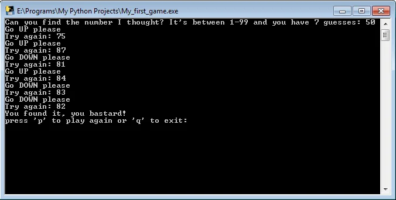

Το πρώτο μου πρόγραμμα στην Python!..
Σε αυτή τη σελίδα θα βρείς τον κώδικα για ένα απλό παιχνιδι γραμμένο στην Python, που είναι κλασικό πρόβλημα σε όλα τα μαθήματα αρχάριων.
Το πρώτο μου project στην python ήταν το κλασικό απλό παιχνιδάκι που φτιάχνουν όσοι ξεκινάνε την γλώσσα. Ο υπολογιστής διαλέγει τυχαία έναν αριθμό απο το 1 ως το 99 και ο χρήστης έχει 7 προσπάθειες για να τον βρει. Το 7 το υπολόγισα γιατί είναι ο αριθμός που σου επιτρέπει να κερδίζεις πάντα, αν πηγαίνεις στην μέση των υποδείξεων κάθε φορά, π.χ ξεκινάς με το 50 και εάν ο υπολογιστής σου πει "επάνω", πηγαίνεις στο 75 κ.ο.κ
Ήταν η πρώτη φορά που χρησιμοποίησα στα σοβαρά την while loop καθώς και η πρώτη φορά που χρησιμοποίησα function που τρέχει όποτε την καλείς. Επίσης ήταν η πρώτη φορά που μετέτρεψα .py αρχείο σε exe για να τρέχει και σε υπολογιστές ατόμων που δεν έχουν εγκατεστημένη την python στον υπολογιστή τους.
Για το τελευταίο χρησιμοποιήθηκε το γνωστό pyinstaller που είναι αρκετά μπελαλίδικο γιατί κατά πρώτον δεν φτιάχνει ένα και μοναδικό αρχείο exe στην περίπτωση που έχεις εικόνες και άλλα αρχεία στο πρόγραμμα σου, οπότε πρέπει να τα κουβαλάς όλα αυτά μαζί με το exe, σε ένα αρχείο rar ή κάτι τέτοιο.
Κατά δεύτερον μερικά antivirus συμπεριλαμβανομένης της Google, βλέπουν λανθασμένα το exe σου σαν ιό. Η Google δεν είναι antivirus αλλά δεν σε αφήνει να στείλεις το exe μέσω mail, ούτε καν να το μοιράσεις μέσω του google drive.
Η λύση? Κάνεις 2 πράγματα. Πρώτον ανεβάζεις το αρχείο στο virus total , βλέπεις ποια antivirus το βλέπουν σαν ιό και στέλνεις false positive, τουλάχιστον στα μεγάλα antivirus που χρησιμοποιούνται ευρέως.
Δεύτερον συμπιέζεις το πρόγραμμα που θέλεις να μοιράσεις με κωδικό και μετά το ανεβάζεις στο google drive ή σε οποιονδήποτε server έχεις για διαμοιρασμό. Προσωπικά χρησιμοποιώ το OneDrive της Microsoft, που δίνει 5 GB δωρεάν χώρου και είναι μια χαρά.
Όποιος ενδιαφέρεται, μπορεί να κατεβάσει το αρχείο exe του παιχνιδιού εδώ , δεν χρειάζεται εγκατάσταση, είναι απόλυτα ασφαλές αν και η Google μπορεί να το εμφανίσει σαν uncommon download.
Παρακάτω είναι ο πλήρης κώδικας αυτού του παρθενικού προγράμματος.
import numpy as np
def my_first_game():
num_of_guesses = 1
max_num_of_guesses = 7
out_of_guesses = False
# The number we are looking for is auto generated
gold_num = np.random.randint(1, 99)
your_num = input("Can you find the number I thought? It's between 1-99 and you have 7 guesses: ")
try:
while int(gold_num) != int(your_num) and not out_of_guesses:
if num_of_guesses < max_num_of_guesses:
if int(gold_num) < int(your_num) < 100:
print("Go DOWN please")
elif int(gold_num) > int(your_num) > 0:
print("Go UP please")
elif int(your_num) >= 100:
print("No numbers above 99 are allowed!")
num_of_guesses -= 1
elif int(your_num) <= 0:
print("No negative numbers or 0 are allowed!")
num_of_guesses -= 1
num_of_guesses += 1
your_num = input("Try again: ")
else:
out_of_guesses = True
print("Sorry, you lost!")
else:
if int(gold_num) == int(your_num):
print("You found it, you bastard!")
except ValueError:
print("This is not a number, the program will terminate.")
my_first_game()
while True:
play_or_quit = input("Press 'p' to play again or 'q' to quit: ")
if play_or_quit.lower() == "p":
my_first_game()
else:
if play_or_quit.lower() == "q":
exit(0)